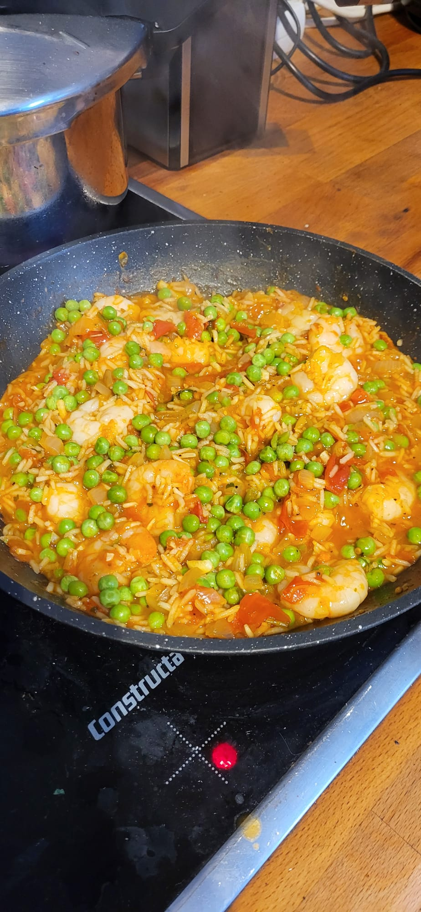

Home
Shrimp Risotto

Description
Tasty shrimp risotto perfect for cold winter days. Made in about 20 minutes.
Macros:
- Calories: 593
- Carbs: 68g
- Protein: 56g
- Fats: 9g
Ingredients for 1 serving:
- 200g frozen shrimp
- 50g raw rice
- 1 medium onion or 50g
- 10g tomato puree
- 2 cloves of garlic
- 100g crushed tomatoes
- 200g water
- 10g vegetable or fish broth powder
- 150g peas
- 5g fresh parsley
- 2g oil
- Salt and black pepper
Directions:
Cooking times may vary depending on your pan heat.
- Dice the onion and grate and peel the garlic cloves. Add water and broth powder to a glass and mix until combined.
- Add oil to the pan on medium heat and add the onion. Fry them for around 3 minutes or until translucent.
- Add the rice and fry for another 2 minutes.
- Add garlic and tomato puree and keep frying for about 20 seconds.
- Add the crushed tomatoes, broth and black pepper and mix everything well.
- Close the lid and let it simmer for 12-15 minutes or until the rice is almost done.
- Turn the heat to medium-high heat and add in the frozen shrimps. Keep cooking for 2-3 minutes until the shrimps are cooked and the rice is done.
- Add the peas at the very end and give everything a stir and keep cooking for another 30 seconds.
- Turn the heat off and add a bunch of parsley on top. Done!
Notes:
- Arborio rice recommended. Using long-grain rice like Jasmine or Basmati will reduce cooking time by a couple minutes.
- You can also thaw the shrimps overnight so they cook faster, but it's not necessary.